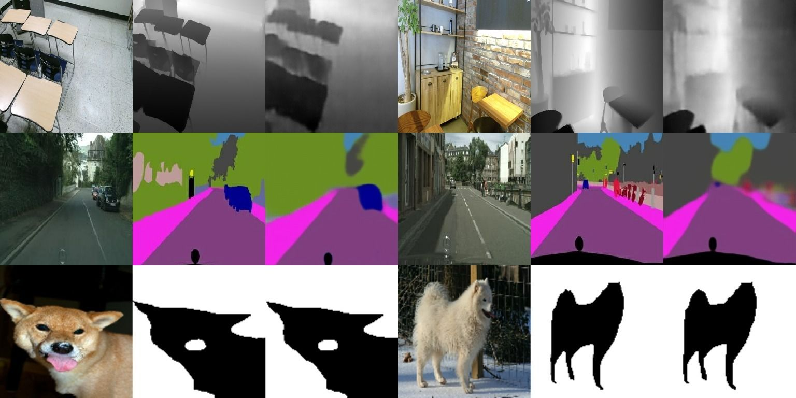

Tensor-to-Image: Image-to-Image Translation with Vision Transformers
Yigit Gunduc
[GitHub] [Paper]
Abstract
Transformers gain huge attention since they are first introduced and have a wide range of applications. Transformers start to take over all areas of deep learning and the Vision transformers paper also proved that they can be used for computer vision tasks. In this paper, we utilized a vision transformer-based custom-designed model, tensor-to-image, for the image to image translation. With the help of self-attention, our model was able to generalize and apply to different problems without a single modification
Code & Paper
Tensor-to-Image: Image-to-Image Translation with Vision Transformers
For the full and please see the GitHub repo
Cite
If you use this code for your research, please cite our paper Tensor-to-Image: Image-to-Image Translation with Vision Transformers
@article{gunducc2021tensor,
title={Tensor-to-Image: Image-to-Image Translation with Vision Transformers},
author={G{\"u}nd{\"u}{\c{c}}, Yi{\u{g}}it},
journal={arXiv preprint arXiv:2110.08037},
year={2021}
}